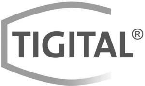

Trade Mark Journal No.2025/016 18 April 2025
WO0000001847538 (1,2,16,17,20,35,40,42)
Office of origin: Austria
Date of International Registration:12 June 2024
Date of designation in the UK:
12 June 2024

International priority date claimed: 18 December 2023
(Austria)
- Class 1
- Chemical preparations and materials for film, photography and printing; ceramic compositions for sintering [granules and powders]; compositions for the manufacture of technical ceramics; chemical materials for use in the manufacture of ceramics; unprocessed polymers or thermosets or ceramics for use in the 3D printing industry; synthetic resins, unprocessed; unprocessed artificial resins as raw materials in the form of powders; unprocessed resins for use with 3D printers; chemical materials, namely resins, industrial chemicals and polymer composites, used in 3D printers to create 3D variants of computer-generated designs; unprocessed resins for use in the 3D printing industry; raw synthetic resins in the form of powder; ceramic materials in powder form for use in industry; liquid coatings [chemical]; chemicals for use in the manufacture of printing ink; chemical cleaning agents for use in industrial manufacturing processes; solvent based cleaning preparations for removing grease during manufacturing operations.
- Class 2
- Printing toners; toner for printers and photocopiers; toner cartridges, filled, for printers and photocopiers; conductive inks; ink for printers and photocopiers; ink jet printer ink; printing ink; ink for printers; typographic ink; printers' pastes [ink]; ink cartridges, filled, for printers and photocopiers; lacquers; lacquers in the nature of a coating; paints; paints as coating agents; paint additives in the nature of binders; ground coatings [paints and oil]; primers; clear coats in the nature of paints; pigment preparations; pigment paste (pigments for paints).
- Class 16
- Labels and tags [made of paper]; heat transfers; heat transfer paper; ink; prints; printed matter.
- Class 17
- Insulating inks; plastics and resins in extruded form for production purposes; semi-worked synthetic resins; semi-processed resins; thermosetting resins [semi-processed]; extruded plastics in the form of pellets for use in manufacture; resins in extruded form for general industrial use; resins in extruded form for use in manufacture; semi-worked plastic substances; mouldable synthetic resins [semi-finished]; resins in extruded form; polymer-based plastic filaments for 3D printers.
- Class 20
- Labels and tags [made of plastic].
- Class 35
- Wholesale and retail services, including via the internet, of chemical products and materials, ceramics, ceramic compounds, consumables for 3D printers, resins, ceramic materials, coatings, printer inks, cleaning agents, toners, inks, printer pastes, ink cartridges, varnishes, paints, adhesion promoters, primers, clear varnishes, printers, printing machines, labels and labels, heat-applied labels, heat transfer paper, prints, printed products, plastics, plastic filaments, pigment preparations, pigment pastes (pigments for paints), machines for the ceramics industry.
- Class 40
- Printing; digital printing; custom 3D printing for others; custom 3D printing for others; consulting services related to additive manufacturing, in particular 3D printing work; inkjet printing; custom inkjet printing for third parties; consulting services related to inkjet printing work; xerographic printing work; custom xerographic printing work for third parties; consulting services related to xerographic printing; application of coatings to metal, plastics, wood, glass, concrete, ceramics, paper, corrugated cardboard and composites of the aforementioned materials; customer-specific application of coatings on metal, plastics, wood, glass, concrete, ceramics, paper, corrugated cardboard and composites of the aforementioned materials; consulting services relating to the application of coatings to metal, plastics, wood, glass, concrete, ceramics, paper, corrugated cardboard and composites of the aforementioned materials; treatment of materials, namely application of coatings, other than painting; treatment of materials, namely custom application of coatings, other than painting for third parties; consulting services relating to the application of coatings, other than painting.
- Class 42
- Consulting, design services and scientific research in the field of science, engineering services and IT services, including additive manufacturing, inkjet printing, xerographic printing and coatings; development and production of coatings and design of printed products; conducting material analyses for use in additive manufacturing, inkjet printing, xerographic printing and coatings; design services for printed products and coatings; design of printed products and coatings.
TIGER Coatings GmbH & Co. KG
Representative: Freshfields Bruckhaus Deringer Rechtsanwälte PartG mbB, Peregringasse 4, A-1090 Wien, AUSTRIA